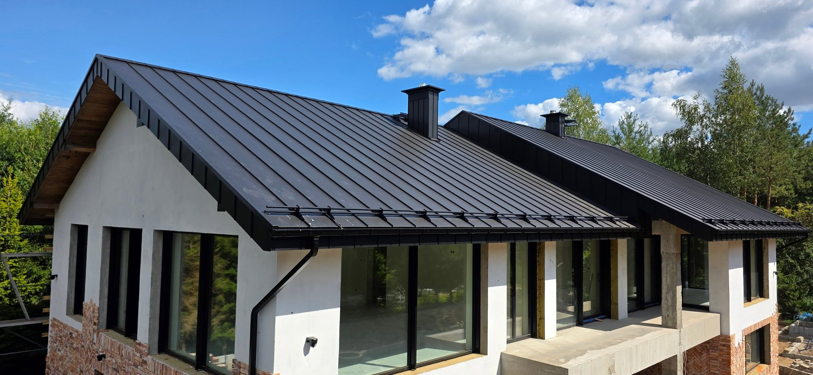
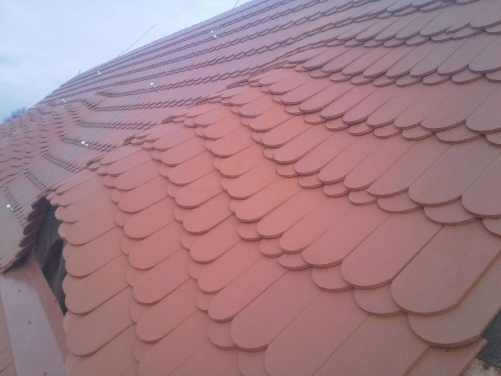

Dachy w Lubawie od blisko 50 lat
Nowe pokrycia, remonty, więźby i obróbki blacharskie. Cenę znasz po pomiarze, zanim wjedzie materiał.

Wiesz, na czym stoisz - na każdym etapie
Od pierwszego telefonu do odbioru roboty. Bez cen wymyślanych po fakcie i bez znikania w połowie dachu.
- Pomiar ze zdjęciami z góry - oglądasz dach razem z nami
- Wycena na piśmie, rozbita na pozycje: materiał osobno, robota osobno
- Pokrycie dobierane do bryły dachu i nośności więźby
- Z Twojego dachu schodzimy dopiero, jak jest skończony
- Gwarancja na robociznę - jak coś nie gra, wracamy i poprawiamy
Dekarstwo i pokrycia dachowe - Lubawa i okolice
DACHY PRYBA to ekipa dekarska z Lubawy. Budujemy, wymieniamy i naprawiamy dachy spadziste oraz płaskie - od więźby i pokrycia, przez obróbki blacharskie i rynny, po szukanie źródła przecieku.
Kryjemy połacie dachówką ceramiczną i karpiówką, blachą na rąbek stojący i blachodachówką, na dachach płaskich zgrzewamy papę. Robimy też pokrycia z gontu drewnianego oraz obróbki z miedzi i cynku: gzymsy, kosze, hełmy wieżyczek. To detale, których z podwórka nie widać, a to one przesądzają o szczelności całego dachu.
Wchodzimy na nowe domy jednorodzinne i na obiekty zabytkowe - kościoły, kaplice, dwory - gdzie na plac wjeżdża podnośnik albo dźwig. Pracujemy w Lubawie, Nowym Mieście Lubawskim, Iławie i Ostródzie. Planujesz nowy dach, wymianę pokrycia albo szukasz miejsca, którym leje? Napisz albo zadzwoń - pomiar i wycena są bezpłatne.
Czym kryjemy dachy
Kryjemy w pełnym systemie: membrana, łaty i kontrłaty, obróbki i wentylacja połaci z jednego kompletu - przypadkowo zestawione zamienniki puszczają najszybciej. Model i kolor ustalamy przy wycenie.
Czym się zajmujemy
Dach spadzisty i płaski, od więźby po rynny. Przy każdym zleceniu piszemy, co wchodzi w zakres.
Pokrycia dachowe
Dachówka ceramiczna i karpiówka, blachodachówka, blacha na rąbek stojący, gont drewniany. W pełnym systemie: membrana, łaty i kontrłaty, nie sama blacha na stare deski.
Więcej →Remonty i naprawy dachów
Rzadko wszystko naraz jest do wymiany. Przekładamy dachówkę, wymieniamy skorodowane kosze i obróbki, uzupełniamy membranę tam, gdzie puściło.
Więcej →Więźba dachowa
Stawiamy więźby pod nowe dachy i wzmacniamy stare. Konstrukcję liczymy pod konkretne pokrycie - dachówka waży kilka razy więcej niż blacha.
Więcej →Rynny i obróbki blacharskie
Spadki ustawione na nowo, wymiana skorodowanych odcinków, obróbki komina, kosza i okapu. Gzymsy, hełmy i wieżyczki robimy z miedzi i cynku, na zakładkę i na rąbek.
Więcej →Okna dachowe i podbitka
Podbitka zamyka dach od spodu: równa linia przy okapie, kratki wentylacyjne i koniec z ptakami pod pokryciem. PVC albo drewno, zawsze na ruszcie.
Więcej →Dachy płaskie i papa
Papa zgrzewana pasami z zakładem, razem z obróbkami kominków i wpustów. Każdy zgrzew sprawdzamy, zanim zjedziemy z dachu.
Więcej →Nie widzisz swojego tematu na liście? Odezwij się - obejrzymy dach i wycenimy za darmo.
Dachy, które kryliśmy
Każdy z tych dachów ma pod sobą czyjś dom albo zabytek. Pokrycia, więźby, blacharka - bez upiększania.


Jak wygląda współpraca z nami
Chcemy, żebyś od początku wiedział, czego się spodziewać: ile potrwa robota i ile realnie zapłacisz. Dlatego każde zlecenie prowadzimy tą samą, prostą ścieżką, bez kosztów dopisywanych po fakcie.
1. Telefon
Dzwonisz albo wysyłasz zdjęcie dachu. Po krótkiej rozmowie wiesz, czy przyjedziemy obejrzeć i kiedy.
2. Oględziny i pomiar
Wchodzimy na dach, oglądamy więźbę i mierzymy połać. Robimy zdjęcia, żebyś zobaczył to samo, co my. Bezpłatnie.
3. Wycena i termin
Dostajesz wycenę na piśmie, rozbitą na pozycje, i konkretny termin. Materiał zamawiamy po jej zatwierdzeniu.
4. Robota i odbiór
Kryjemy dach zgodnie z ustaleniami, stare pokrycie jedzie na kontener, a plac zostawiamy uprzątnięty.
Gdzie pracujemy
Bazę mamy przy Kupnera w Lubawie, więc na dach w samej Lubawie i okolicznych wsiach dojeżdżamy tego samego dnia. Regularnie pracujemy w powiecie iławskim i nowomiejskim, a przy większych obiektach - kościołach, dworach, budynkach użyteczności - wyjeżdżamy dalej, bo sprzęt i tak jedzie na lawecie. Nie wiesz, czy dojedziemy pod Twój adres? Wystarczy jeden telefon.
Dobrze wiedzieć
Ile kosztuje nowy dach?
Bez pomiaru nie strzelamy - za dużo zależy od powierzchni, kątów i pokrycia. Widełki usłyszysz już przez telefon, dokładną cenę po pomiarze.
Czy pomiar i wycena są płatne?
Nie. Pomiar i wycena w Lubawie i najbliższej okolicy są bezpłatne i do niczego nie zobowiązują.
Jak długo trwa wymiana dachu?
Typowy dom to zwykle tydzień, dwa - zależnie od pokrycia i pogody. Termin znasz przed startem, a o przesunięciu przez pogodę mówimy od razu, nie po fakcie.
Co ze starym pokryciem?
Rozbiórka i wywóz są w wycenie, chyba że umówimy się inaczej. Stary eternit oddajemy firmie z uprawnieniami do azbestu - tego nie wolno wywieźć byle gdzie.
Czy dostanę fakturę?
Tak - VAT albo paragon, jak wolisz. Przy większych dachach rozliczamy się etapami, po odebranej robocie.
Co, jeśli dach przecieka po robocie?
Wracamy i sprawdzamy, gdzie puściło. Nasza robota - poprawiamy za darmo; przyczyna gdzie indziej - pokazujemy zdjęcia i mówimy, co z tym zrobić.
Umów bezpłatny pomiar
Odezwij się - przyjedziemy obejrzeć dach i przygotujemy wycenę na piśmie.